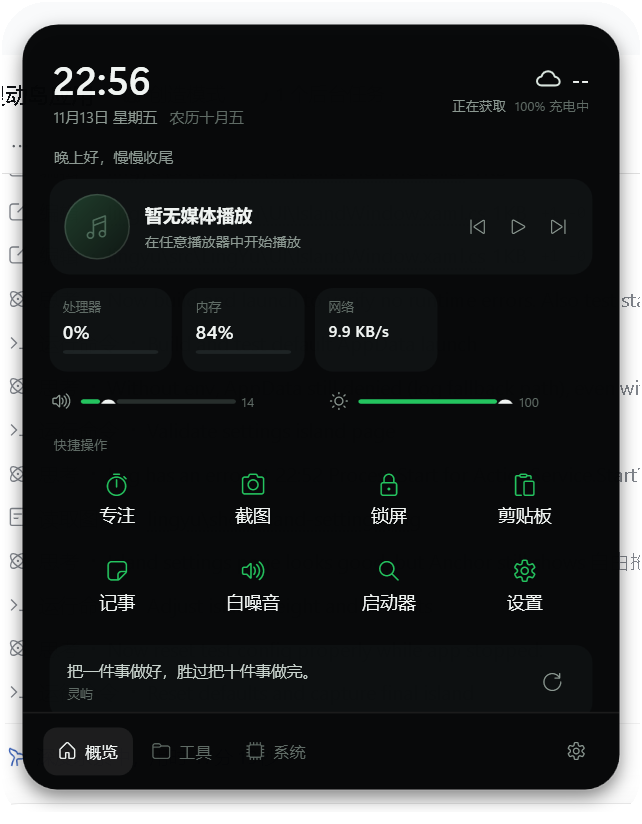
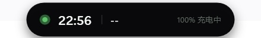
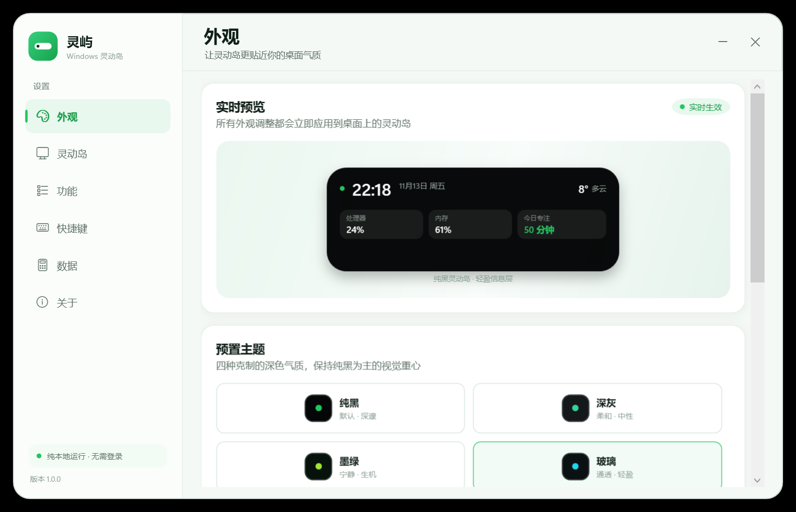
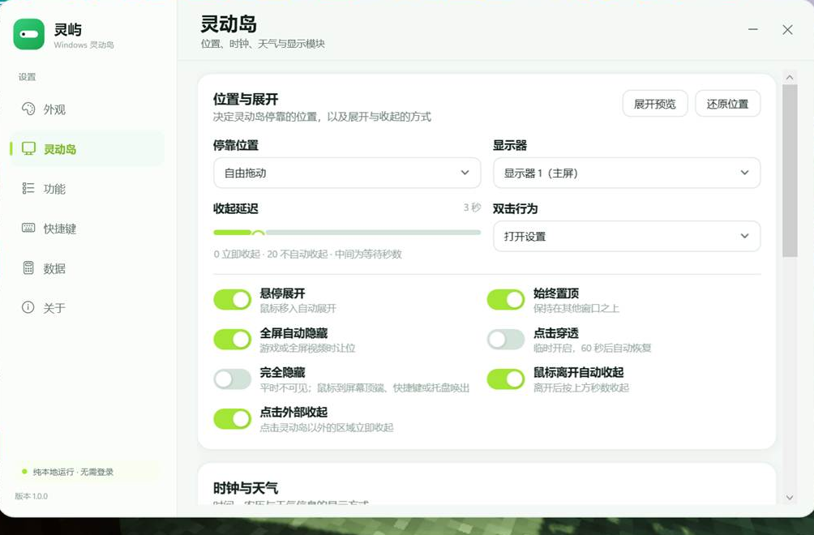
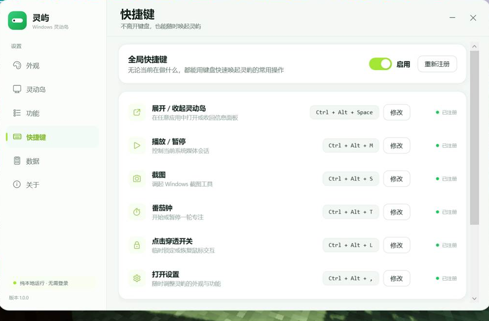
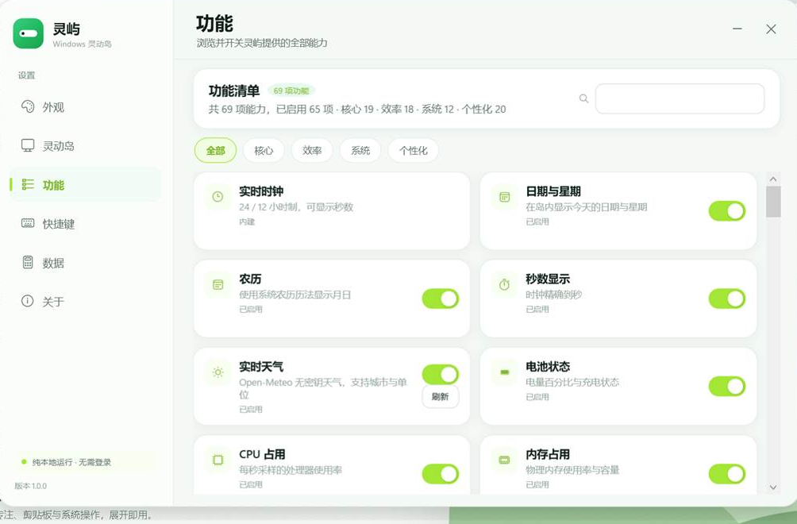

A / 01
时间与天气
秒针、日期、农历与实时天气。不需要打开任何应用，抬眼就能读到今天。
WINDOWS 灵动岛 · 本地优先
时间、天气、音乐、专注与系统控制，安静地停靠在屏幕顶端。需要时它就在那里，不需要时，它几乎不存在。

01 / 关于灵屿
灵屿由两个独立界面组成：屏幕顶端的纯黑胶囊，和一间白绿浅色的设置房间。它们共享同一套本地数据，却彼此克制。
没有账号，没有云端，没有需要学习的复杂层级。你看到的就是全部，你调整的会立刻发生。

02 / 一块岛屿，很多件事
从早上第一眼时间，到深夜最后一首歌。功能很多，存在感很轻。
A / 01
秒针、日期、农历与实时天气。不需要打开任何应用，抬眼就能读到今天。
A / 02
系统媒体信息、播放控制、专辑封面与音量亮度滑块，都在同一处。
A / 03
番茄钟、倒计时、秒表、白噪音与呼吸引导。把节奏放慢一点。
A / 04
快速笔记、待办、剪贴板历史与文件暂存架。灵感落下时，不用切换窗口。
A / 05
任务管理器、终端、资源管理器、截图、锁屏与蓝牙设备，原生能力一步直达。
A / 06
四种深色预置、六种强调色，缩放、透明度、圆角与动画速度都可以慢慢调。
04 / 三个瞬间
鼠标移入，胶囊舒展开来。不用点击，不用找图标。离开后按你设定的秒数自动收回。
展开时点击屏幕上的其他地方，它会立刻让路。刚刚展开的面板不会在桌面上逗留。
启用完全隐藏。桌面干净得像它从未出现过，直到你把鼠标推向上方。
05 / 界面一瞥
灵动岛是深夜的墨，设置是清晨的纸。两种气质，同一套逻辑。




06 / 键盘是第二条捷径
六组全局快捷键全部可以重新录制。按下新的组合键，冲突会诚实显示，不合适的随时换掉。
07 / 一点坚持
“把一件事做好，
胜过把十件事做响。”
灵屿没有账户系统，不上传剪贴板，不读取你的聊天。所有设置、笔记、待办与链接都留在这台电脑里。它不试图成为你的第二大脑，只想成为桌面上一个顺手的角落。